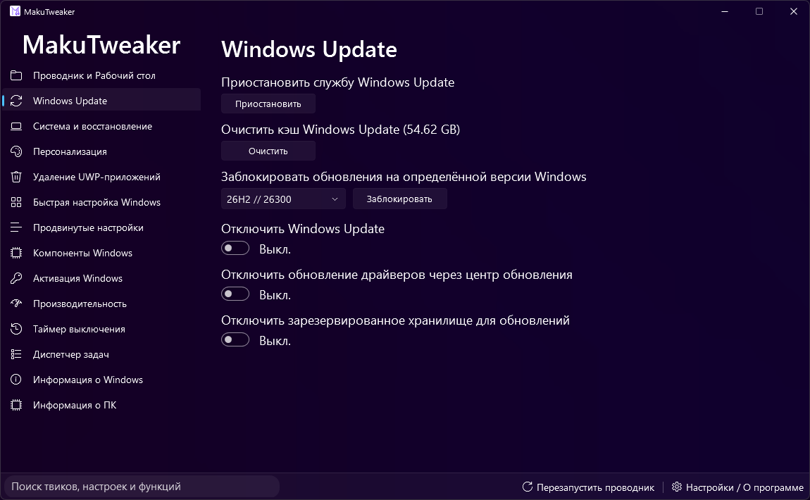
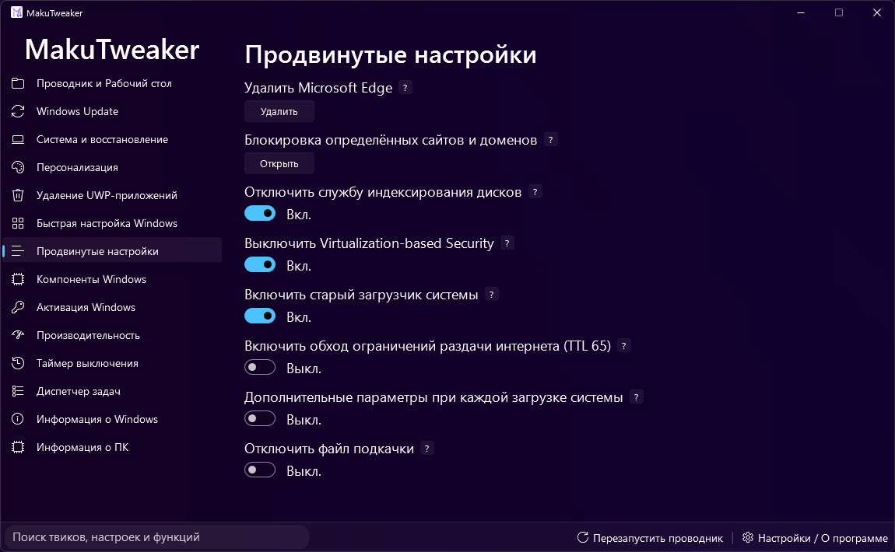
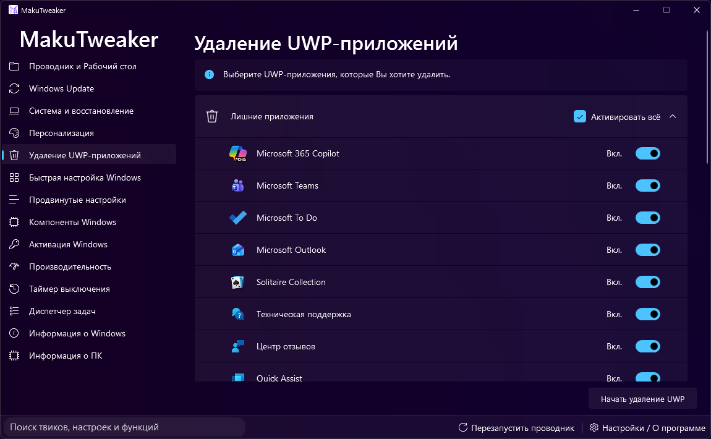
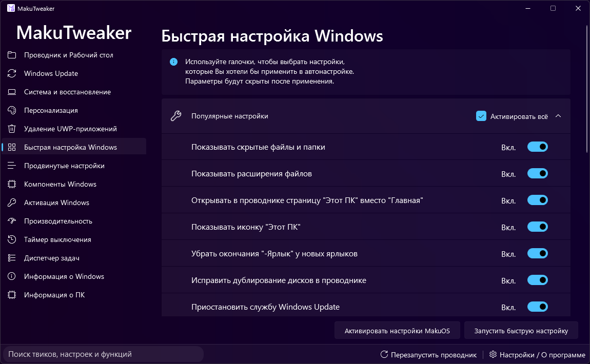
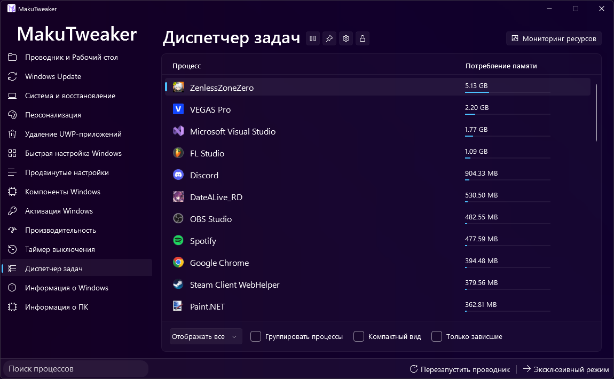
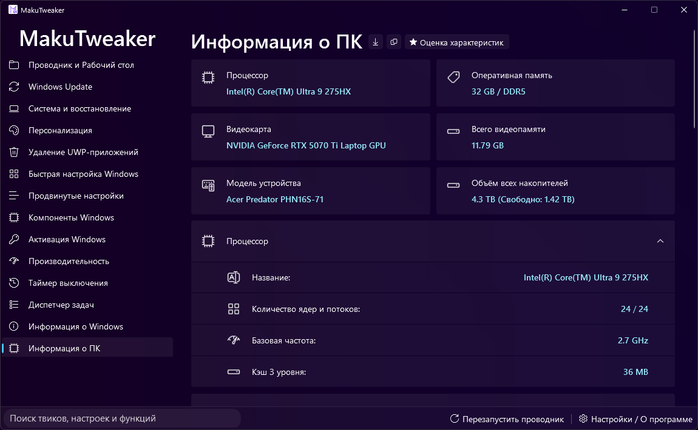
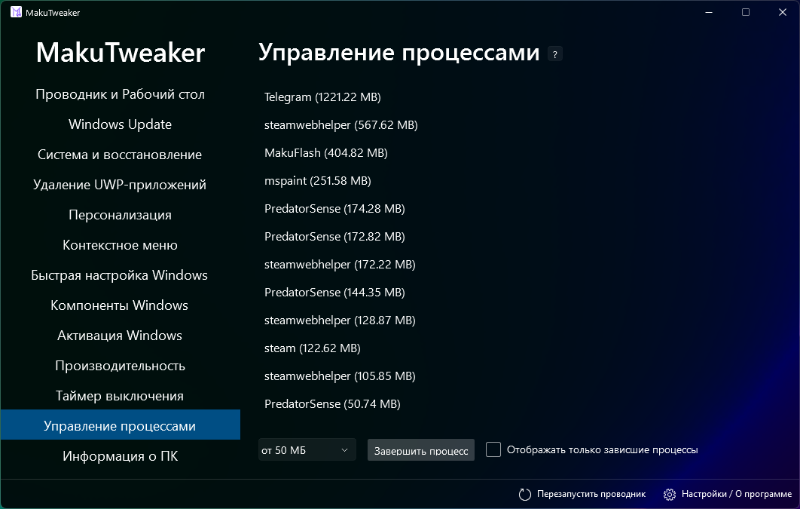
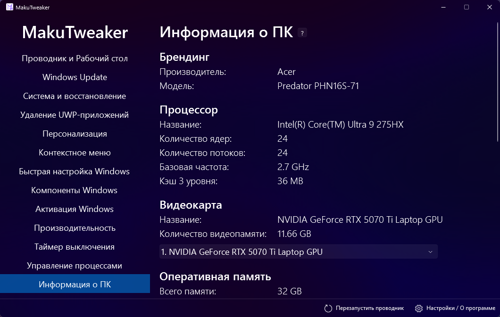
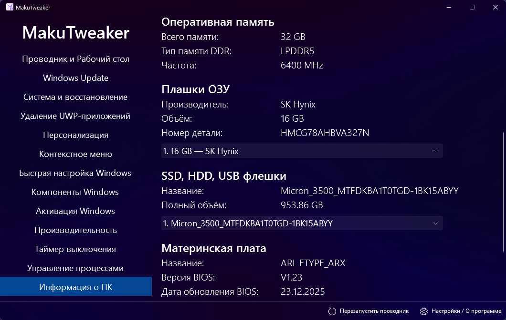

Adderly.Top
Adderly.Top
Скачать MakuTweaker
Самый дружелюбный и полезный твикер для Windows.
В этой программе вы можете гибко настроить и персонализировать систему, а так же управлять процессами и посмотреть подробную информацию о характеристиках вашего ПК!
Также, вы можете выполнить быструю настройку Windows, управлять системными компонентами и избавиться от системного мусора!
В MakuTweaker доступно несколько тем оформления, благодаря которым вы можете настроить программу на свой вкус.









Системные требования
• Для запуска программы нужна Windows 10 1809 (2018) и библиотека NET Core 8.0.
С февраля 2026 - установщик MakuTweaker устанавливает и библиотеку, при наличии интернета.
• Для полного функционала нужна Windows 11 22H2.
Что нового в MakuTweaker 5.3?
Новое масштабнейшее обновление MakuTweaker - 5.3!
• На вкладке "Информация о ПК" появился компактный режим! Открыть его, можно нажав на клавишу F3. В нём отображается: название и модель устройства, видеокарта с наибольшим объёмом видеопамяти, процессор, оперативная память, объединённый объём всех накопителей, материнская плата, версия BIOS и наличие модуля TPM! Через дробь указана дополнительная информация, например:
"название процессора // количество ядер // потоков".
Помимо этого, в обычном режиме "Информации о ПК", в комбобоксах видеокарт и накопителей теперь имеется сортировка по количеству памяти от большего к меньшему. Если у вас несколько видеокарт, например встройка с 128 МБ, и дискретка с 8 ГБ - на первом месте теперь абсолютно всегда будет сразу же выводиться информация о дискретной видеокарте. Аналогично и с накопителями - основной самый большой SSD будет всегда первым.
Так же, на этой вкладке была добавлена подсказка о горячих клавишах.
• Вкладка "Быстрая настройка Windows" впервые со времён выхода MakuTweaker получила огромное обновление!
По многочисленным просьбам, теперь эта страница содержит в себе практически все твики из всех страниц, чтобы всё можно было настроить в одном месте! Автоматически выделены галочки которые рекомендуются как настройка MakuOS, типа включения скрытых файлов, или убирания задержки в контекстном меню. Фактически, эта вкладка теперь имеет в себе 90% функционала программы. Только самые продвинутые и не популярные функции не будут здесь находиться.
А ещё, применённые настройки теперь пропадают с красивой анимацией, чтобы на странице отображались только те параметры, которые ещё не были применены.
Так же, была добавлена кнопка "Снять все галочки" и "Активировать все галочки", что значительно сэкономит время на новую авто-настройку MakuTweaker!
• Недавно вышедшая вкладка "Управление процессами" тоже была обновлена! Панель стала более компактной, и теперь в неё вмещается больше элементов. На этой странице тоже появилась подсказка возле заголовка, открывающая целую панельку со справкой о том, зачем эта страница нужна и кому будет полезна!
• На вкладке "Windows Update" была полностью переделана функция "Отключить Windows Update"! Теперь она не только применяет пару параметров в реестре, но и прописывает сервера обновлений Microsoft в hosts файл, и настраивает службу запуска центра обновлений! Теперь, MakuTweaker 5.3 умеет отключать центр обновлений насмерть! Я себе первым же делом это и сделал :)
Функция возврата полностью зеркальная, и если у вас появится желание вернуть обновления - вы сможете снять галочку, перезагрузиться, и центр обновлений оживёт обратно.
Из мелких но приятных юзер экспириенс нововведений:
• Добавлена подсказка для функции включения DirectPlay, и отключения Bing в меню Пуск
• Исправлен недочёт, когда на компьютерах отображалась функция "Сделать отчёт о характеристиках батареи"
• Была обновлена функция "Отключить V.B.S.", она теперь покрывает ещё больше параметров реестра и служб
• Таймер перезагрузки проводника был увеличен с 1 секунды до 2 секунд
• Командная строка больше не мелькает в некоторых функциях
• Используя функцию "Восстановить систему с помощью DISM, теперь окно закрываться не будет, чтобы пользователь знал о завершении прогресса
• На странице "Активация Windows" был удалён метод активации KMS, так как он устарел, и его полностью заменил метод HWID от Massgrave
• По просьбам пользователей из РФ, в MakuTweaker появилась функция "Включить обход ограничений раздачи интернета (TTL 65). Подробности можете узнать наведя курсор мыши на подсказку
Как я уже говорил ранее, я провёл глобальную перепись кода MakuTweaker после моего друга и заодно обновил файлы локализации. Теперь в них нет дубликатов, несостыковок и неиспользуемых строк!
Всего локализация содержит около 250 строчек, поэтому если вы знаете другие языки помимо EN/RU/UA/CZ, напишите мне в ЛС (@makuadarii) и возможно, в MakuTweaker появится новый язык именно благодаря вам!
Что нового в MakuTweaker 5.2?
Большое обновление - MakuTweaker 5.2!
Это обновление стало продолжением масштабной переработки кода, оптимизации и исправлений. И конечно же, не обошлось без новых функций!
С момента выхода 4 и 5 поколения MakuTweaker люди часто просили добавить всплывающие подсказки к функциям, которые могут быть не совсем понятны - и они вернулись!
Во вкладках "Система и восстановление", "Компоненты Windows" и "Персонализация" теперь можно навести курсор мыши на значок вопроса
и получить подробное описание функции и объяснение, зачем она может понадобиться.
Новая вкладка - "Производительность"! Она будет особенно полезна владельцам ноутбуков. В ней можно установить лимит мощности процессора, что значительно увеличивает автономность.
Например, на моём MacBook Air 2015 установка лимита до 10% увеличила время просмотра сериалов с 4 до 11 часов!
Снижение производительности в бенчмарке составило колоссальные 75%, и даже на современных устройствах можно добиться прироста автономной работы примерно до 40%.
На ПК функция тоже полезна - например, чтобы снизить нагрузку и сделать работу кулеров тише.
Была очень сильно переделана вкладка "Информация о ПК"!
Внешне она стала глазу приятней, ведь она теперь не так сильно сжата как это было раньше.
Появилась новая категория - Плашки ОЗУ, в которой можно посмотреть производителя оперативной памяти, номер детали, и объём конкретных планок!
Так же, была переработана система получения DDR и частоты, поэтому проблема с некорректным отображением скорости памяти могла быть решена.
В самом верху для ноутбуков и OEM компьютеров появилась новая категория "Брендинг", в которой отображается производитель устройства и номер его модели!
А в разделе "Материнская плата" теперь можно проверить наличие TPM модуля.
Мало кто знал, но если на странице "Информация о ПК" нажать на клавишу F5 - вы сможете создать текстовой файл с полным описанием всех характеристик.
Теперь в этом файле тоже отображается список всех установленных плашек ОЗУ.
Полезное обновление получила и вкладка "Удаление UWP приложений"! Система сканирования приложений была полностью переписана. Теперь вместо ожидания 30-40 секунд, сканирование происходит молниеносно! Поэтому, если процесс у вас происходит быстро, при открытии вкладки вы больше даже не заметите сканирование, и у вас сразу появится красивая анимация переключателей!
Из приятных мелочей:
• Появилась кнопка сворачивания окна
• При успешной активации Windows теперь появляется всплывающее уведомление
• Многочисленные исправления в локализациях
А в установщике теперь есть вариант установки последних Microsoft Visual C++ Redistributable! Хоть для работы твикера они и не требуются, теперь после установки системы вы тоже сможете установить их в первую очередь!
Что нового в MakuTweaker 5.1?
Большое техническое обновление - MakuTweaker 5.1
Это подготовка к следующему большому обновлению 5.2, которое планируется в марте.
• Исправлена галочка "Отключить телеметрию", теперь её состояние запоминается. Галочка всё это время работала как нужно, но не сохранялась.
• Вкладка "Таймер выключения" была перемещена вниз, дабы отдельные повседневные вкладки выделялись снизу, а настройки Windows были сверху.
• Удалено "Сжатие системы с помощью CompactOS", так как на практике оказалось - на современных системах это замедляет производительность.
• На странице "Управление процессами" был добавлен фильтр от 50 мегабайт для сортировки процессов. Так же, был обновлён перечень скрытых системных процессов, которые не будут отображаться.
• Из страницы "Быстрая настройка Windows" была удалена галочка установки NET Framework 3.0, так как после блокировки центра обновлений Windows в РФ, люди жаловались что скрипт бесконечно висит.
И самое главное - установщик MakuTweaker теперь автоматически устанавливает библиотеку NET Core 8.0, которая требуется для запуска. Больше не нужно переходить на страницу Microsoft, и вручную это делать!
Что нового в MakuTweaker 5.0.58?
Большое обновление - MakuTweaker 5.0.58!
Теперь MakuTweaker заменяет ещё и диспетчер задач!
Была добавлена новая вкладка - "Управление процессами".
Подход максимально дружелюбный: системные процессы, которые и так нельзя завершать, скрыты. Отображается действительно только то, что пользователь открыл сам.
Все процессы сортируются от большего потребления к меньшему, а также можно редактировать планку и регулировать минимальный порог - от 100 мегабайт до 2 гигабайт на один процесс.
Это полезно, чтобы отфильтровать процессы и оставить только самые "гигантские" - например, программы для монтажа, виртуальные машины или игры.
И самое главное! В аналоге "Диспетчера задач" у MakuTweaker есть галочка "Отображать только зависшие процессы"!
Если в Windows окно помечено как зависшее и побелевшее, можно включить отображение только таких окон, чтобы быстро найти процесс который завис, и разобраться с ним.
Также, нажав правой кнопкой мыши по процессу, вы сможете открыть контекстное меню, в котором, в отличие от диспетчера задач, сразу можно открыть "Расположение файла" процесса. А при нажатии на "Завершить процесс" - сразу же завершается всё древо процессов.
Расформированной вкладкой была - "Отключение телеметрии". Её функция была объединена в одну, и перенесена на вкладку "Система и восстановление".
Что нового в MakuTweaker 5.0.44?
Мини обновление MakuTweaker - 5.0.44
Я заметил, что многие стали использовать твикер в качестве скриншота своих комплектующих ПК.
Поэтому, чтобы упростить процесс создания скриншота и сэкономить время, я решил вынести видеокарту в самый верх, чтобы на лицевой стороне было видно и процессор, и видеокарту, и оперативку.
А всё остальное и не важное для контекста, будет в самом низу.
Так же, в связи с последними новостями, активация по методу KMS будет скрыта для Windows 11 24H2 и выше. Соответственно, чутка ещё обновил локализацию на этой странице.
Что нового в MakuTweaker 5.0.31?
MakuTweaker 5.0.31 - Микрофикс
Я заметил что около 30% людей которые мне присылали свои тесты, оказались невнимательными, спрашивая "а как начать многопоточный тест"...
Немного поразмышляв, я понял что лучше не идти по устоям Apple, и решил снова упростить этим людям жизнь, разделив бенчмарки на две разные кнопки.
Помимо этого, удалил функцию "Включить скрытые темы Windows 11", так как она вызывала проблемы у некоторых пользователей, а так же добавил функцию "Принудительно отключить Hyper-V" - она буквально мне починила VMware :)
Что нового в MakuTweaker 5.0?
Спустя 4 месяца тишины - представляю вам MakuTweaker 5.0!Новые функции:
• Новая вкладка - Информация о ПК!
Это практически полная замена CPU-Z для простого человека - название процессора, количество ядер, потоков, базовая частота, кэш 3 уровня, базовые данные про ОЗУ, BIOS, видеокарты и SSD, которые можно будет выбирать если у вас их несколько!
• Новая вкладка - Компоненты Windows.
Очередная расчистка вкладки "Система и восстановление". В новую вкладку вошли установки DirectPlay и NET Framerwork, включение старого просмотрщика фото, сброс кэша WinSXS, включение скриптов Powershell...
и новая функция - "Отключение всплывающего окна Xbox Game DVR! Та самая вещь, которая нужна для пользователей LTSC редакции которые играют в игры.
• Новая функция - бенчмарк! На вкладке "Информация о ПК" вы сможете протестировать свой процессор в одноядерном и многопоточном тесте и сравнить его с чужими результатами на сайте!
• На вкладке "Персонализация" появилась функция "Добавить кнопку *Завершить задачу* на панели задач", которая позволит завершать процессы нажав на ПКМ по программе.
Изменения/Исправления:
• Удалена галочка на вкладке "Таймер выключения", так как в ней не было нужды
• На вкладке "Windows Update" в комбобоксе выбора версии для блокировки, теперь логически отображаются только та же версия, и версии выше текущей
• На вкладке "Быстрая настройка Windows" была удалена галочка "Отключить SmartScreen" и "Очистить Кэш Windows Update", чтобы не мешать системе на случай первого запуска
• На вкладке "Система и восстановление" параметры были отсортированы по полезности и популярности
• На некоторых вкладках была удалена пара бесполезных или неактуальных функций для Windows 11 24H2/25H2
• Различные исправления локализаций на вкладке "Проводник" и "Активация Windows"
• На вкладке "Система и восстановление", при включении функции "Отключить SmartScreen", теперь и отключается ошибка о "неизвестном издателе"
• Различные исправления на вкладке "Контекстное меню"
Ну и изменения непосредственно в MakuTweaker!
Куча исправлений багов, несостыковок, и самое главное - новая поддержка тем!
Теперь MakuTweaker можно кастомизировать: Если раньше стандартной композицией была "Альтернативная Мика", то теперь можно установить и обычную "Мику", и даже "Акрил" как на кадре, который перенимает фон с рабочего стола!
Ну а так же, MakuTweaker стал выше за счёт добавления новой вкладки! Теперь ещё больше контента будет помещаться в одну область, что улучшит опыт использования :)
Что нового в MakuTweaker 4.3.0?
Новое обновление MakuTweaker 4.3.0!Была проведена большая работа добавлению функций в которых действительно нуждались люди!
• Был обновлён порядок вкладок в программе! Теперь они отсортированы по важности и по популярности, а так же по виду. В самом начале титульный "Проводник", далее настройка центра обновлений, затем крупнейшая вкладка "Система и восстановление", удаляющее встроенный мусор "Удаление UWP приложения", дальше различные вкладочки... А в конце, серьёзные вкладки типа Активатора, установки приложений, и таймер выключения!
• Был наведён порядок и в разделе "Удаление UWP приложений"! Теперь, мусорные UWP отсортированы по какой либо важности. Слева находятся только сугубо похороненные приложения которые отключены или заброшены компанией Microsoft. Посередине по прежнему вполне терпимые, и к ним прибавилась возможность удалить Outlook!
• Вкладка "Активация Windows" была полезно обновлена! Добавлена активация Microsoft Office, а так же упрощена активация с помощью KMS! Так же, был исправлен вывод об ошибке в случае неудачи, теперь всё снова корректно и понятно отображается. А ещё, были удалены мёртвые сервера.
• На вкладке "Система и восстановление", в опции "Отключить контроль учётных записей" было добавлено предупреждение о том, что на Windows 11 будет переставать работать Drag-and-Drop на панели задач. MakuTweaker никогда к этому не имел отношения, и проблема не связана с ним. Поэтому, если вы замечали это и вам не нравилось, попробуйте включить функцию обратно. Помимо этого, эта галочка была обновлена. Теперь при активации будет включаться дополнительный параметр реестра отключающий надоедливое предупреждение о подписях издателя файла!
• На этой же вкладке была добавлена функция "Включить сторонние скрипты PowerShell".
• Теперь запуск MakuTweaker запрещён на Windows 7, Windows 8.1, и Windows 10 1507. Запуск на этих версиях будет предлагать установить новенькую MakuTweaker Legacy Windows Edition, лёгкую и маленькую специально разработанную для Windows 7 и 8!
Что нового в MakuTweaker 4.2.0?
Спустя полгода MakuTweaker наконец получил обновление — версия 4.2.0!• Теперь MakuTweaker запоминает последнюю открытую вкладку. Это особенно удобно для тех, кто часто меняет один и тот же твик.
• Добавлена поддержка Windows 11 25H2. Поскольку Microsoft — это настоящая контора солнышек, на вкладке «Меню Пуск и Панель задач» в этой версии будут скрыты три параметра: управление миниатюрами на панели задач (так как они больше не работают) и скрытие виджетов. На Windows 10, в свою очередь, скрываются неподдерживаемые твики.
• Немного обновлена самая важная вкладка — Windows Update. Очистка кэша теперь перенесена туда, а переключатели размещены в нижней части, чтобы самое важное всегда было наверху.
• На вкладке «Удаление UWP-приложений» теперь можно удалять Будильники — это будет полезно пользователям Windows 10.
• Вкладка «Система и восстановление» получила большое обновление! Среди нововведений:
Добавлена возможность отключения таймера спящего режима и отключения дисплея;
Добавлена функция отключения файла подкачки системы;
Добавлена опция отключения компонента Virtualization-based Security.
• Раздел «Разное» был расформирован. Три функции из него перенесены во вкладку «Система и восстановление» — это отключение SmartScreen, UAC и горячих клавиш. Остальные перемещены в «Персонализацию».
• Была переделана страница «Персонализация». Туда были перенесены две галочки настроек загрузчика - скрытия логотипа Windows и её анимации загрузки, "Отображение супер-подробных сведений о системе", и появились две новые галочки которые будут полезны людям без активации системы - "Включить тёмную тему", и "Отключить прозрачность".
• Вместо расформированного раздела появилась новая вкладка, которую просили многие пользователи! Вкладка «Установка приложений» — именно там теперь можно установить самые необходимые программы: Google Chrome, Telegram, 7-Zip, Steam, медиаплееры и многое другое!
Что нового в MakuTweaker 4.1.0?
Обновление MakuTweaker - 4.1.0!
• На вкладке "Проводник" появилась функция "Скрытие дисков"
• На вкладке "Система и восстановление" появились две новые функции - Отключение гибернации, а так же отключение изоляции ядра
• В некоторых вкладках кнопки после применения теперь блокируются, чтобы не путать пользователей
• Были исправлены уведомления требующие перезагрузку системы
• Был исправлен баг на вкладке удаления UWP приложений, где после применения все галочки блокировались или ничего не удалялось
• На русском языке вкладка "Телеметрия" была переименована в "Отключение телеметрии", а при нажатии "Отключить всю телеметрию", теперь включаются все галочки.
• Была исправлена привязка локализаций